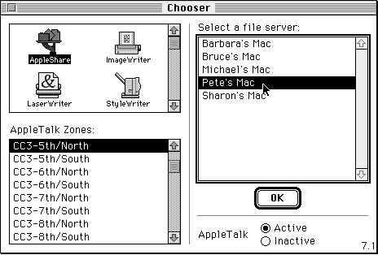

Writing Your Own List Definition Procedure
The default list definition procedure supports only the display of unstyled text.
If your application needs to display items graphically, you can create your own
list definition procedure. For example, the Chooser desk accessory uses its own list definition procedure to display icons and names corresponding to Chooser extensions. Figure 4-19 illustrates the Chooser's use of a custom list definition procedure.Figure 4-19 The Chooser's use of a custom list definition procedure

This section explains how you can write a list definition procedure. After writing a list definition procedure, you must compile it as a resource of type'LDEF'and store it in the resource fork of any application that uses the list definition procedure.This section provides code for a list definition procedure that supports the display of QuickDraw pictures. It works by requiring the application that uses it to store as cell data variables of type
PicHandle. That way, each cell stores only 4 bytes of data, and the List Manager's 32 KB limit is not at risk of being approached for small lists. This list definition procedure provides enough versatility to display virtually any type of image.You can write your own list definition procedure to store some type of data other than unstyled text. You can give your list definition procedure any name you choose, but it must be defined like this:
PROCEDURE MyLDEF (message: Integer; selected: Boolean; VAR cellRect: Rect; theCell: Cell; dataOffset: Integer; dataLen: Integer; theList: ListHandle);The List Manager can send four types of messages to your list definition procedure, as indicated by a value passed in themessageparameter. The following constants define the different types of messages:CONST lInitMsg = 0; {do any special list initialization} lDrawMsg = 1; {draw the cell} lHiliteMsg = 2; {invert cell's highlight state} lCloseMsg = 3; {take any special disposal action}Of the second through seventh parameters to a list definition procedure, only thetheListparameter, which contains a handle to a list record, can be accessed by your list definition procedure in response to all four messages.The
selected,cellRect,theCell,dataOffset, anddataLenparameters pass information to your list definition procedure only when the value in themessageparameter contains thelDrawMsgor thelHiliteMsgconstant. These parameters provide information about the cell to be affected by the message. Theselectedparameter indicates whether the cell should be highlighted. ThecellRectandtheCellparameters indicate the cell's rectangle and coordinates. Finally, thedataOffsetanddataLenparameters specify the offset and length of the cell's data within the relocatable block referenced by thecellsfield of the list record.Listing 4-28 shows a list definition procedure that processes messages sent to it by the List Manager.
Listing 4-28 Processing messages to a list definition procedure
PROCEDURE MyLDEF (message: Integer; selected: Boolean; VAR cellRect: Rect; theCell: Cell; dataOffset: Integer; dataLen: Integer; theList: ListHandle); BEGIN CASE message OF lInitMsg: MyLDEFInit(theList); lDrawMsg: MyLDEFDraw(selected, cellRect, theCell, dataOffset, dataLen, theList); lHiliteMsg: MyLDEFHighlight(selected, cellRect, theCell, dataOffset, dataLen, theList); lCloseMsg: MyLDEFClose(theList); END; END;TheMyLDEFprocedure defined in Listing 4-28 calls procedures defined later in this section to handle the various messages specified by themessageparameter. It passes all relevant parameters to these message-handling procedures. Thus, it passes only thetheListparameter to the procedures that handle the initialization and close messages.Responding to the Initialization Message
The List Manager automatically allocates memory for a list and fills out the fields of a list record before calling your list definition procedure with alInitMsgmessage. Your application might respond to the initialization message by changing fields of the list record, such as thecellSizeandindentfields. (These fields are by default set according to a formula discussed in "About the List Manager" beginning on page 4-13.)Many list definition procedures do not need to perform any action in response to the initialization message. For example, the list definition procedure that allows the Standard File Package to display small icons next to the names of files uses the standard cell size and thus does not need to perform any special initialization.
Since pictures can come in a variety of sizes, the pictures list definition procedure introduced in Listing 4-28 does not need to perform any special initialization either; it depends on the application that uses the list definition procedure to define the correct cell size. Thus, Listing 4-29 shows how the pictures list definition procedure responds to the initialization method.
Listing 4-29 Using the default initialization method
PROCEDURE MyLDEFInit (theList: ListHandle); BEGIN END;
- Note
- Your list definition procedure does not actually need to call a procedure that responds to the initialization message if it does not need to perform any special action.

Responding to the Draw Message
Your list definition procedure must respond to thelDrawMsgmessage by examining the specified cell's data and drawing the cell as appropriate. At the same time, your list definition procedure must ensure that it does not alter the characteristics of the drawing environment.Listing 4-30 shows how the pictures list definition procedure responds to the draw message.
Listing 4-30 Responding to the
lDrawMsgmessagePROCEDURE MyLDEFDraw (selected: Boolean; cellRect: Rect; theCell: Cell; dataOffset: Integer; dataLen: Integer; theList: ListHandle); VAR savedPort: GrafPtr; {old graphics port} savedClip: RgnHandle; {old clip region} savedPenState: PenState; {old pen state} myPicture: PicHandle; {handle to a picture} BEGIN {set up the drawing environment} GetPort(savedPort); {remember the port} SetPort(theList^^.port); {set port to list's port} savedClip := NewRgn; {create new region} GetClip(savedClip); {set region to clip region} ClipRect(cellRect); {set clip region to cell } { rectangle} GetPenState(savedPenState); {remember pen state} PenNormal; {use normal pen type} {draw the cell if it contains data} EraseRect(cellRect); {erase before drawing} IF dataLen = SizeOf(PicHandle) THEN BEGIN {get handle to picture} LGetCell(@myPicture, dataLen, theCell, theList); {draw the picture} DrawPicture(myPicture, cellRect); END; {select the cell if necessary} IF selected THEN {highlight cell} MyLDEFHighlight(selected, cellRect, theCell, dataOffset, dataLen, theList); {restore graphics environment} SetPort(savedPort); {restore saved port} SetClip(savedClip); {restore clip region} DisposeRgn(savedClip); {free region memory} SetPenState(savedPenState); {restore pen state} END;TheMyLDEFDrawprocedure defined in Listing 4-30 begins by saving characteristics
of the current graphics environment, such as the graphics port, the clipping region, and
the pen state. It also sets the pen to a normal state, and sets the clipping region to the cell's rectangle. TheMyLDEFDrawprocedure then draws in the cell rectangle by erasing the rectangle, getting the handle stored as the cell's data, and drawing the picture referenced by that handle. Then, if the cell should be selected, it simply calls
theMyLDEFHighlightprocedure defined in the next section. Before returning,MyLDEFDrawrestores the graphics environment to its previous state and disposes of the memory it used to remember the clipping region.
- Note
- For more information on the QuickDraw routines and data structures used in Listing 4-30, see Inside Macintosh: Imaging with QuickDraw.
Responding to the Highlighting Message
Virtually every list definition procedure should respond to thelHiliteMsgmessage in the same way, by inverting the bits in the cell's rectangle. Your list definition procedure would need to respond in a different way if selected list items should not simply be highlighted. For example, in a list of patterns, simply highlighting selected cells could confuse the user because highlighted patterns look just like other patterns.Listing 4-31 shows how your list definition procedure can respond to the
lHiliteMsgmessage in a way that is compatible with all Macintosh models, including models that do not support Color QuickDraw.Listing 4-31 Responding to the
lHiliteMsgmessagePROCEDURE MyLDEFHighlight (selected: Boolean; cellRect: Rect; theCell: Cell; dataOffset: Integer; dataLen: Integer; theList: ListHandle); BEGIN {use color highlighting if possible} BitClr(Ptr(HiliteMode), pHiliteBit); InvertRect(cellRect); {highlight cell rectangle} END;For more information on highlighting, see Inside Macintosh: Imaging with QuickDraw.Responding to the Close Message
The List Manager sends your list definition procedure thelCloseMsgmessage immediately before disposing of the data occupied by a list. Your list definition procedure needs to respond to the close message only if it needs to perform some special processing before a list is disposed, such as releasing memory associated with a list that would not be released by theLDisposeprocedure.The pictures list definition procedure responds to the close message by freeing memory occupied by the list's pictures, whose handles are stored in the list. While the
LDisposeprocedure will dispose of the picture handles themselves, it cannot dispose of the relocatable blocks referenced by the picture handles.Listing 4-32 shows how the pictures list definition procedure responds to the
lCloseMsgmessage.Listing 4-32 Responding to the
lCloseMsgmessagePROCEDURE MyLDEFClose (theList: ListHandle); VAR aCell: Cell; {cell in the list} myPicHandle: PicHandle; {handle stored as cell data} myDataLength: Integer; {length in bytes of cell data} BEGIN SetPt(aCell, 0, 0); IF PtInRect(aCell, theList^^.dataBounds) THEN REPEAT {free memory only if cell's data is 4 bytes long} myDataLength := SizeOf(PicHandle); LGetCell(@myPicHandle, myDataLength, aCell, theList); IF myDataLength = SizeOf(PicHandle) THEN KillPicture(myPicHandle); UNTIL NOT LNextCell(TRUE, TRUE, aCell, theList); END;Using the Pictures List Definition Procedure
The pictures list definition procedure introduced in Listing 4-28 can display a list containing pictures. For example, the SurfWriter application uses it to display a list of icons. SurfWriter first creates a list using theMyCreateVerticallyScrollingListfunction shown in Listing 4-1 on page 4-18. After creating the list, rather than using the default cell size as calculated by the List Manager, the SurfWriter application sets the size of the cells using theLCellSizeprocedure, as shown in Listing 4-33.Listing 4-33 Setting the cell size of a list
PROCEDURE MySetCellSizeForIconList(myCellSize: Point; myList: ListHandle); BEGIN LCellSize(myCellSize, myList); END;To later add an icon to a list of icons, the SurfWriter application uses the procedure shown in Listing 4-34.Listing 4-34 Adding an icon to a list of icons
PROCEDURE MyAddIconToList(myCellRect: Rect; myPlotRect: Rect; myCell: Cell; theList: ListHandle; VAR myPicHandle: PicHandle; resID: Integer); CONST kIconWidth = 32; {width of an icon} kIconHeight = 32; {height of an icon} kExtraSpace = 2; {extra space on top and to left of icon} VAR myIcon: Handle; BEGIN {picture occupies entire cell rectangle} SetRect(myCellRect, 0, 0, kIconWidth + kExtraSpace, kIconHeight + kExtraSpace); {plot icon over portion of rectangle} SetRect(myPlotRect, kExtraSpace, kExtraSpace, kIconWidth + kExtraSpace, kIconHeight + kExtraSpace); {load icon from resource file} myIcon := GetIcon(resID); {create the picture} myPicHandle := OpenPicture(myCellRect); PlotIcon(myPlotRect, myIcon); ClosePicture; {store handle to picture as cell data} LSetCell(@myPicHandle, SizeOf(PicHandle), myCell, theList); {release icon resource} ReleaseResource(myIcon); END;Note that theMyAddIconToListprocedure uses the QuickDraw routinesOpenPictureandClosePictureto bracket the set of drawing commands that it uses to define the picture data for a particular cell. It then stores the handle to the picture
as the cell's data, so that the pictures list definition procedure can draw the picture within the cell.